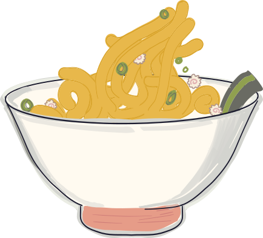

Before you panic — check below. Most Noodle mysteries are solved in about ten seconds. Fitting, really.
Nope! Free Noodle gives you 5 silly breaks a day — think of it like a snack jar that refills tomorrow. Come back after midnight (your time) for 5 more, or go Pro for unlimited slurps.
This usually fixes itself in a few seconds. If it doesn't: tap "Go Pro" (you'll find it in Settings, or right on the home screen if you're capped out), then tap "Restore previous purchase." That's the app's way of saying "oh right, sorry, you DID pay me."
Free Noodlers get 5 favorite slots. Want to save a new one? You'll need to swap out an old fave to make room — or upgrade to Pro for unlimited favorites (no swapping required).
Totally your call, no hard feelings. Cancel anytime through your phone's App Store or Google Play subscription settings — Noodle doesn't hold your subscription hostage.
Yep — Settings → Sound Effects → Off. Silent slurping, if that's your vibe.
Sadly, Noodle doesn't (yet!) have a magic cloud brain that remembers you across devices — your Favorites live locally on your phone, like sticky notes on your fridge. New phone = new fridge, blank notes. 😢
Good news for Pro folks: Before you switch, go to Settings → Export Favorites and save the file to Files (iPhone) or iCloud Drive — that's exactly where "Restore" will go looking for it later, so keep it there. (Tucking it into Notes or another app is like hiding your fridge photo in a random drawer — Restore won't know to look there!) On your new phone, install Noodle, go to Settings → Restore Favorites, and pick that file. Ta-da — favorites are back on the new fridge.
(Free users: sorry, no export tool for you yet — but hey, that's what Pro's for 😉)
A real human reads every message. (No bots, no noodles pretending to type. Probably.)
Email hello@loafinglabs.com